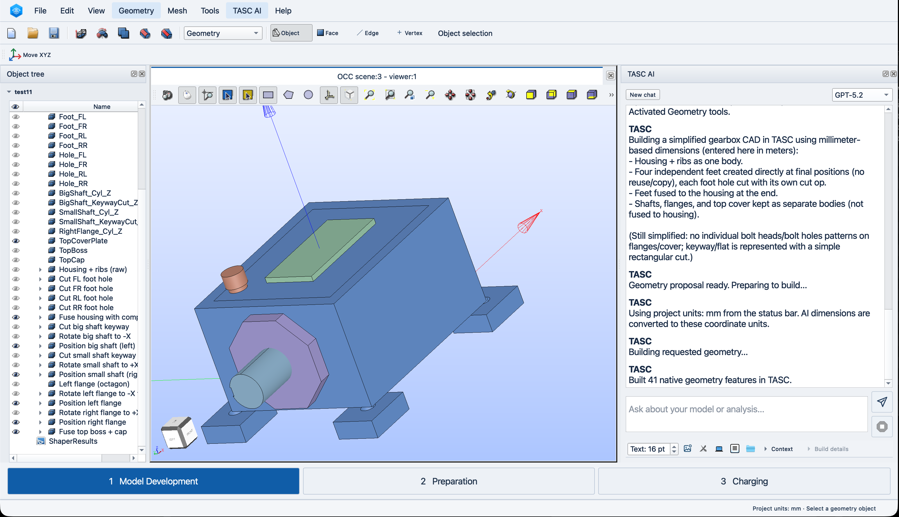

Describe the intent.
Communicate the geometry, dimensions, and relationships that matter to the model.
DESIGN & MODELING
Work with geometry, communicate design intent, and inspect the model alongside the AI conversation.
INSIDE TASC

This example shows a simplified gearbox built inside TASC, with a native geometry feature tree and the AI conversation beside the model. The conversation describes the construction approach and records which parts remain separate bodies.
Communicate the geometry, dimensions, and relationships that matter to the model.
Review the proposed construction steps and modeling assumptions alongside the geometry.
Examine the model and feature tree, then refine the geometry for the next engineering step.